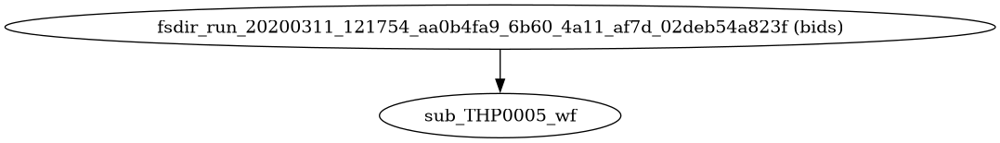
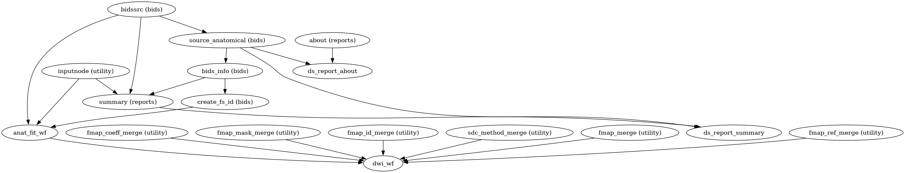

dmriprep.workflows.base module
dMRIPrep base processing workflows.
- dmriprep.workflows.base.clean_datasinks(workflow)View on GitHub
- dmriprep.workflows.base.get_estimator(layout, fname)View on GitHub
- dmriprep.workflows.base.init_dmriprep_wf()View on GitHub
Create the base workflow.
This workflow organizes the execution of dMRIPrep, with a sub-workflow for each subject.
If FreeSurfer’s
recon-allis to be run, a FreeSurfer derivatives folder is created and populated with any needed template subjects.- Workflow Graph

(Source code, png, svg, pdf)
{kind=link}
{kind=link}
- dmriprep.workflows.base.init_single_subject_wf(subject_id, session_id=None, name=None)View on GitHub
Organize the preprocessing pipeline for a single subject.
It collects and reports information about the subject, and prepares sub-workflows to perform anatomical and diffusion MRI preprocessing. Anatomical preprocessing is performed in a single workflow, regardless of the number of sessions. Diffusion MRI preprocessing is performed using a separate workflow for a full DWI entity. A DWI entity may comprehend one or several runs (for instance, two opposed PE directions.
- Workflow Graph

(Source code, png, svg, pdf)
- Parameters:
subject_id (str) – List of subject labels
session_id – Session label(s) for this workflow.
name – Name of the workflow. If not provided, will be set to
sub_{subject_id}_ses_{session_id}_wf.
- Inputs:
subjects_dir (os.pathlike) – FreeSurfer’s
$SUBJECTS_DIR
{kind=link}
{kind=link}
- dmriprep.workflows.base.map_fieldmap_estimation(layout, subject_id, dwi_data, ignore_fieldmaps, use_syn, force_syn, filters)View on GitHub